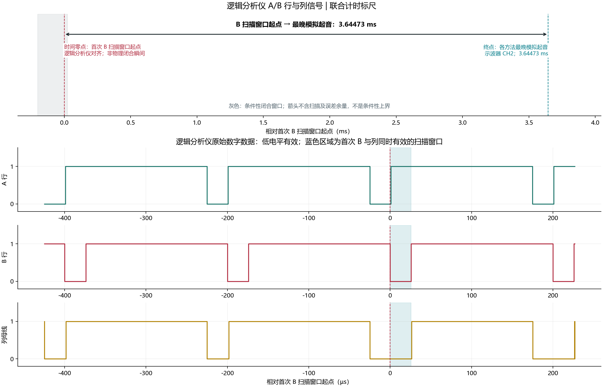
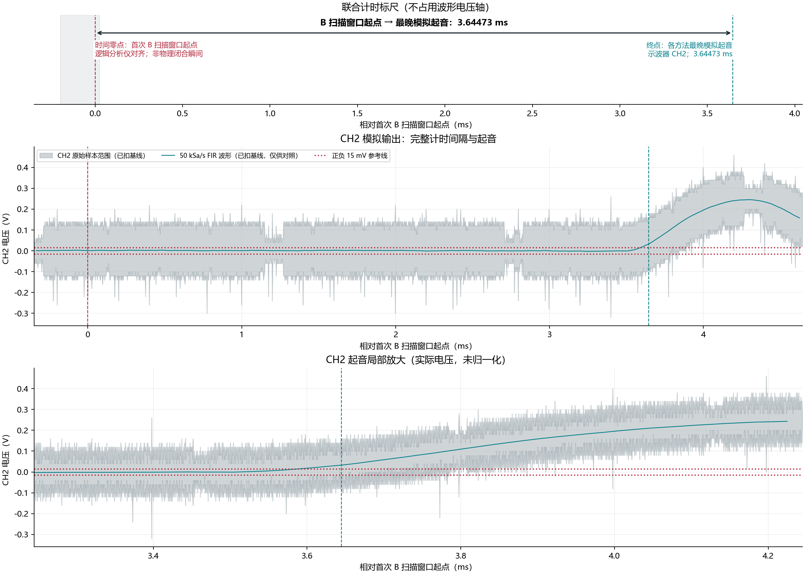

行列联合延迟验证：批次相位复核完成；列出条件性包络，非严格验收判定
编号已整理；原始采集试次：1。原始采集参数和波形未改写，新旧编号见映射表。
同一次按压的行列联合验证。图像由保存的原始数据绘制，不是仪器屏幕截图。工具结论不等于比赛验收。
测量结果与计时口径
| 项目 | 结果 |
|---|
| 联合结果 | 批次相位复核完成；列出条件性包络，非严格验收判定 |
| 数据来源 | 逻辑分析仪：A 行、B 行、列；示波器：列信号与 DAC 模拟输出 |
| 两台仪器对齐依据 | 同一次按压的共同列信号边沿拟合 |
| 对齐前提 | 人工确认同一次、单键按压；两份记录都包含首次列导通前至少两个扫描周期静止段；全起止沿逐一配对；错帧若在对方已观测静止段引入导通则排除。 |
| 数字验证范围 | 首个主列导通前固定 5 ms 至记录末尾；此前 2.423795 s 不用于本次扫描验证，原始 CSV 完整保留；不代表此前扫描无异常。 |
| B 定位方式 | 直接检查 B 行内部窗口与列持续低，不要求 5 个 A 单触点脉冲 |
| B 起点模型 | 首次完整 B 内部窗口列低，连续保持至少三个窗口 |
| 首次 B 中途导通 | 未启用 |
| 前帧 A 部分接触 | 未启用 |
| 图中时间零点 | 首次出现 B 导通证据的扫描窗口起点；中途导通时不表示窗口全程列低；不是物理闭合瞬间 |
| 图中终点 | 示波器 CH2，各已分析方法及阈值的最晚起音 |
| 图中标注的间隔 | 3.64473 ms（未加入扫描及误差余量） |
| 最晚起音判据 | 多相 FIR 滤波，25000 Sa/s，20 mV，持续至少 0.1 ms |
| 含扫描及误差处理的结果 | 原未补齐预算包络：3.84900 ms；加入批次经验余量和基础时基假设后：3.879094 ms（条件性情景）。 |
| 扫描周期实测范围 | 199.8750～199.9170 µs |
| 扫描窗口保守余量 | 225.5640 µs（包含一帧及当前 B 行窗口） |
| 共同列信号拟合最大残差 | 0.3632 µs |
| 首次 A 接触瞬态 | 未启用；共同列全部完整起止沿逐一配对 |
| 错帧配对复核 | -2 帧残差 24.635 µs，与已观测按下前静止段冲突、-1 帧残差 24.510 µs，与已观测按下前静止段冲突、+1 帧残差 24.747 µs，与已观测按下前静止段冲突、+2 帧残差 24.791 µs，与已观测按下前静止段冲突；错帧配对须残差超限或与已观测静止段冲突，不能仅凭周期波形宣称唯一同步 |
| 行边界处理 | 常规仅排除宽度≤1 µs且位于主边界±2 µs内的低跳变；首次 A 接触瞬态和首次 B 中途导通独立归类（如有，见明细）；首次 B 碎片化接触仅按独立区间模型核对；不接受后续 B 窗口内部断开，后续 B 窗口须完整列低。 |
| 边界排除带 | 2.0000 µs（分析策略，不是硬件误差保证） |
| 计入上界的额外边界余量 | 3.9996 µs（两侧排除带合计） |
| 边沿短跳变排除数 | A：30、B：16、column：143 |
| 末尾处理 | 未排除逻辑末尾低脉冲 |
| 采集前导段 | 0.000 µs；可排除≤440 µs 的首帧异常（每路最多一个≤60 µs行主脉冲，列仅允许≤1 µs短低脉冲）；其后仍须有至少两个周期的按下前静止段 |
| 前导段排除依据 | 无首帧宽度/周期排除；如有前导短跳变，参数见 analysis.json |
| 前导短低脉冲排除数 | |
| 前导段排除脉冲明细 | 无首帧主脉冲排除 |
| 数字采样分辨率 | 0.0417 µs |
| 示波器采样间隔 | 0.0050 µs |
| 滤波与起音分析余量 | 30 µs（已匹配本批相位复核，经验值，非校准误差上限） |
| 示波器时基误差 | 25 ppm计算假设；官方15 ppm为典型值；预热、温度及校准年龄未核实 |
已完成的批次相位复核与条件性预算
原始证据哈希及联合计时均匹配已完成的24键、84次相位复核批次。
统一额外经验分析余量：30 µs；本条新增相位偏移：1.435 µs。全批次最大新增偏移20.770 µs，向上取整至30 µs；不是把原18项极差重复相加。
本条基础时基假设下的联合条件性包络：3.879094 ms；另加10年漂移情景：3.879288 ms（非本机已知校准年龄）。
基础时基使用25 ppm计算假设；官方15 ppm带典型值脚注，不是保证上限。预热、温度和本机校准年龄未核实；经验余量也不是校准误差上限。因此仅列条件性情景，不自动转成严格验收通过。
全键中文预算报告、计算公式与官方资料
经验余量口径
经验性分析余量不是校准确认的误差上限；滤波使用的未来样本范围不直接当作等量计时误差。现有结果已取各分析配置的最晚起音，批量评估时应避免重复累加已覆盖的方法差异。
结论边界：相位复核与经验余量已完成，不再等待24键测量；但时基仍是假设，非严格计量上界，不能把条件性情景写成无条件达标。
逻辑分析仪：B 扫描窗口证据

示波器：联合时间轴上的模拟起音
终点采用各方法的最晚起音，不一定是图中 50 kSa/s、15 mV 曲线的首次越阈值位置。图中零点与仅示波器分析报告的“推断 B 参考”不同，两个间隔不能直接混用。

判定条件与限制
起点口径为 B 持续有效导通。A/B/列为低有效、固定八行扫描；常规模型要求 B 行内部完整列低；首次中途导通另按独立判据检查：A 尾部已经退出、原始数字内部恰有一次高到低且保持至尾部、模拟列有对应高低证据，随后三个 B 内部窗口完整列低；接通后又断开或更晚部分窗口不接受。不跳过首次部分导通窗口，不将它挪到下一完整窗口计算。普通边沿短跳变仍只在固定边界排除带内处理，另对首次 A 独占窗口内、每段不超过 1 µs 的接触短跳变单独归类；若使用首次 A 碎片区间模型，1～10 µs 前置片段必须全部保留于同一 A 独占窗口，并核对原始模拟列低及紧接 B 内部的模拟列高；不用于排除其它窗口的异常。此时首次下降沿只提供 A 窗口区间约束，且模拟列早期低段须处于同一 A 窗口内、首次上升沿和后续全部起止沿仍严格对齐，紧接 B 内部必须列高。这些分类不推断电气成因，不接受 B 内部重新断开或其它窗口异常。不会将 A 行低电平尾部与 B 行的边界重叠当成 B 导通。边界排除带不是硬件保证，已将两侧排除带合计作为额外不确定性计入结果。两份记录须人工确认同一次动作。观察到的是首次 B 行与列同时有效的窗口，并非精确的 FPGA 输入采样边沿或物理闭合瞬间。先前短暂抖动不在此起点口径内。
条件性计算从前一 B 行窗口起点取更早的闭合参考，再计入同步、采样及填写的误差余量；因此不能把图中箭头数值直接当作物理闭合到模拟起音的最坏延迟。
结果依赖人工填写误差预算及当前记录；不是严格计量上界，不证明全键、最坏情况或无抖动。最大观测扫描周期不能单独证明未来扫描不会暂停。
固件与原始证据
固件人工记录（未读回 FPGA）：C:\Users\lenovo\Desktop\FPGA\FPGA_Instrument_20261031\project\integrated_instrument_64\impl\pnr\integrated_instrument_64.fs
SHA256：2A1C5EA9A07E9421049F5E1623558A684046DF6744FAAC9D5258CDDCDEC18EF8
计算参数与哈希 · 逻辑分析仪数字原始数据 · 示波器原屏
独立模拟起音分析明细
起音搜索从首个列导通之后开始，不是先猜 B 再寻找声音；若声音早于已定位 B 窗口，联合验证拒绝输出可用结果。两种滤波、三种采样率、三种阈值共 18 项，不依赖仅示波器 B 推断报告。
| 方法 | Sa/s | 阈值 mV | 相对首个列导通的起音 ms |
|---|
| 多相 FIR 滤波 | 25000 | 10 | 17.41986 |
| 多相 FIR 滤波 | 25000 | 15 | 17.41986 |
| 多相 FIR 滤波 | 25000 | 20 | 17.45986 |
| 多相 FIR 滤波 | 50000 | 10 | 17.39987 |
| 多相 FIR 滤波 | 50000 | 15 | 17.41986 |
| 多相 FIR 滤波 | 50000 | 20 | 17.43986 |
| 多相 FIR 滤波 | 100000 | 10 | 17.38987 |
| 多相 FIR 滤波 | 100000 | 15 | 17.40986 |
| 多相 FIR 滤波 | 100000 | 20 | 17.42986 |
| 分块均值 | 25000 | 10 | 17.39986 |
| 分块均值 | 25000 | 15 | 17.43986 |
| 分块均值 | 25000 | 20 | 17.43986 |
| 分块均值 | 50000 | 10 | 17.38986 |
| 分块均值 | 50000 | 15 | 17.40986 |
| 分块均值 | 50000 | 20 | 17.42986 |
| 分块均值 | 100000 | 10 | 17.39486 |
| 分块均值 | 100000 | 15 | 17.41486 |
| 分块均值 | 100000 | 20 | 17.42486 |